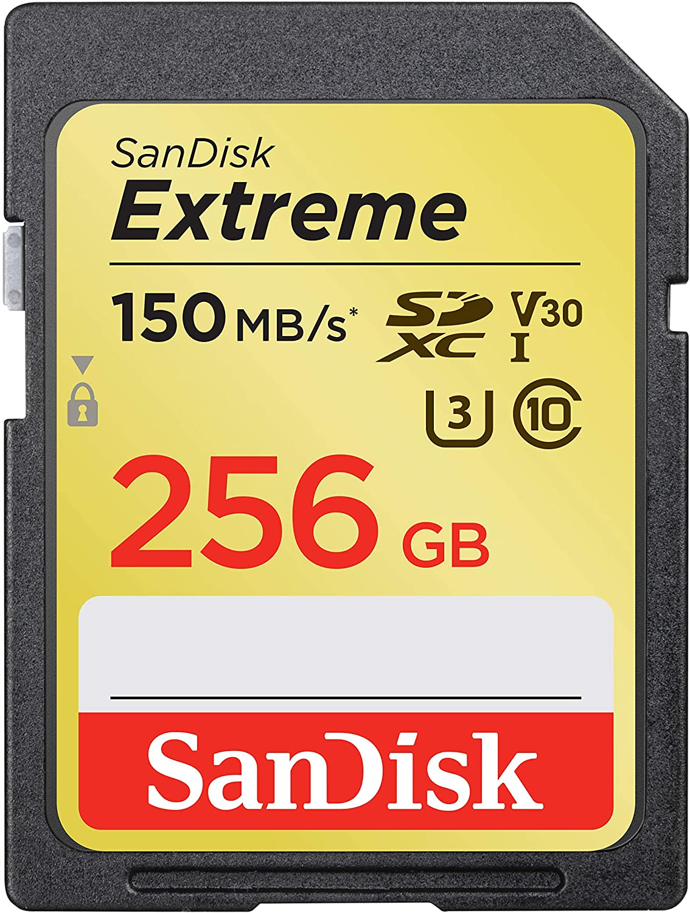
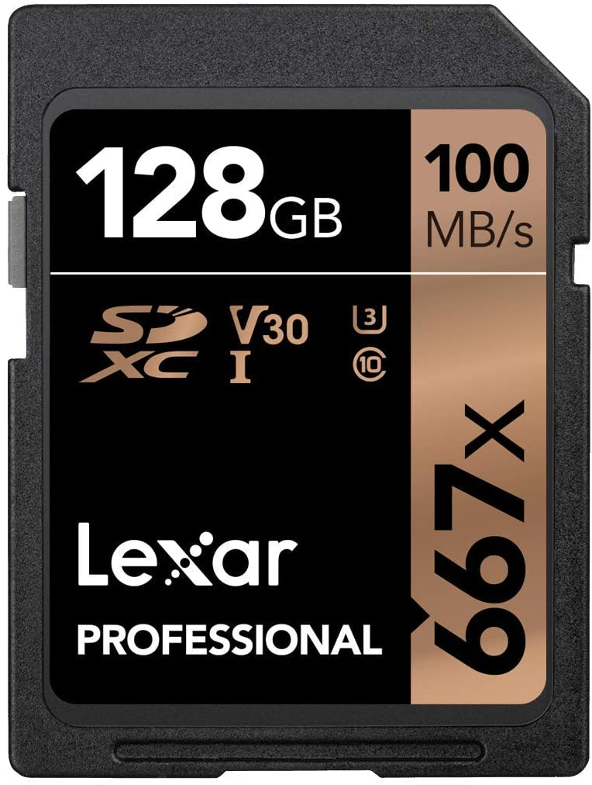
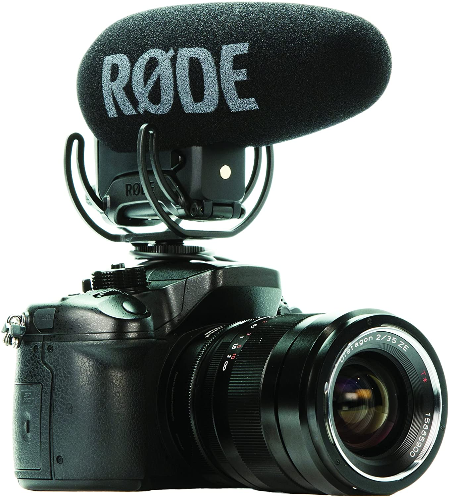

ACCESSORIES

SanDisk 256GB Extreme SDXC UHS-I Card
- Shot speeds up to 90MB/s, transfer speeds up to 170MB/s [requires a compatible device capable of reaching such speeds
- Perfect for shooting 4K UHD video
- UHS Speed Class 3 designates a performance option designed to support 4K UHD video recording
- Built for and tested in harsh conditions(3): Temperature-proof, waterproof, shock-proof, and X-ray-proof | (3)Card only
- (2)UHS Speed Class 3 designates a performance option designed to support 4K UHD video recording with enabled UHS host devices.
- Rescue PRO Deluxe 2 data recovery software download offer
LEARN MORE...

Lexar® Professional 667x SDXC™ UHS-I Cards
- Lexar Professional 667X 128GB SDXC UHS-I/U3 Card (LSD128BNA667)
- Perfect for shooting 4K UHD video(1) and sequential burst mode photography |
- Built for and tested in harsh conditions(3): Temperature-proof, waterproof, shock-proof, and X-ray-proof
- Capture uninterrupted video with UHS Speed Class 3 (U3) and Video Speed Class 30 (V30)(2)
- (2)UHS Speed Class 3 designates a performance option designed to support 4K UHD video recording with enabled UHS host devices.
- Rescue PRO Deluxe 2 data recovery software download offer
LEARN MORE...

Rode VideoMic Pro+ Compact Directional On-Camera Shotgun Condenser Microphone
- Still with the best-in-class Rycote Lyre suspension system onboard
- Automatic Power Function (with plug-in power availability)
- Built-in Battery Door makes replacing the battery a breeze
- Digital Switching - will ensure the user has ultimate capture of the audio signal at the source
- RØDE LB-1 Lithium-Ion Rechargeable Battery, 2 x AA Batteries or continuously via Micro USB.
LEARN MORE...